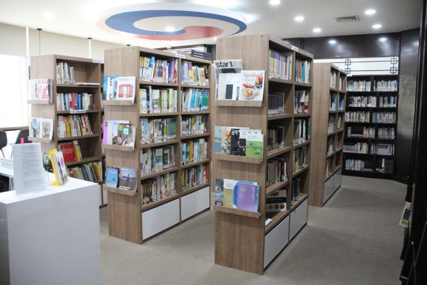

Tentang Perpustakan Lentera Ilmu

Perpustakaan Lentera Ilmu dibentuk pada tanggal 20 Februari 2020 dan terletak di
Desa Kedungpandan RT 04 RW 02 Kecamatan Jabon Kabupaten Sidoarjo. Perpustakaan Lentera Ilmu terbuka untuk semua kalangan masyarakat.
Perpustakaan Lentera Ilmu didirikan oleh Reza Octa Fahlevi dan Rigel Roub Bahari. Perpustakaan Lentera Ilmu ini diharapkan agar menjadi sumber pengetahuan bagi semua masyarakat indonesia. Perpustakaan Lentera Ilmu terus berbenah untuk mengoptimalkan perannya dalam mendukung kegiatan meningkatkan dan mengembangkan literasi terhadap semua masyarakat Indoensia.
Misi
1. Menjadikan perpustakaan sebagai pusat kegiatan belajar
2. Menjadikan perpustakaan pusat pengembangan prestasi keilmuan melalui literasi
3. Menjadikan perpustakaan pusat pengembangan minat dan bahakat
4. Menjadikan perpustakaan pusat sumber informasi